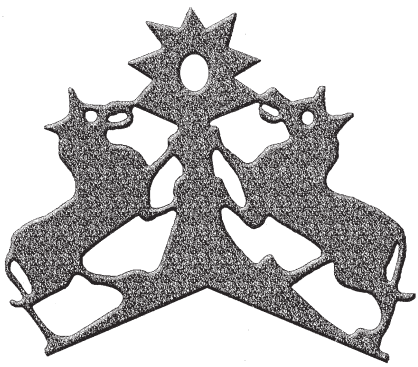
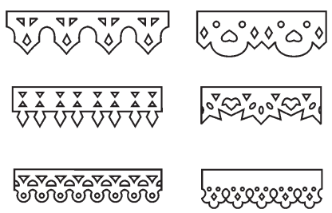
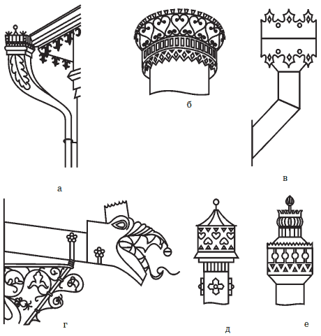
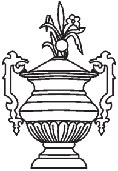
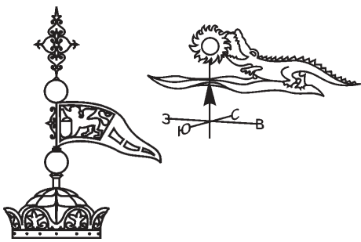
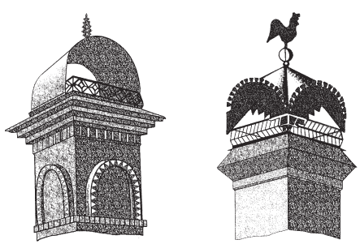

Художественный металл в убранстве кровли.

Построить собственный красивый дом – мечта каждого человека. На Руси эта мечта издавна воплощалась в жизнь при строительстве деревянных рубленых домов.
В одной древней подрядной грамоте, составленной плотничьей артелью, которая бралась построить деревянный храм, сохранилась такая запись: «Рубить высотою как мера и красота скажут». Простая и мудрая заповедь, заключенная в этой фразе, всегда сопровождала хорошего мастера – простого русского мужика.
Но людям хотелось не только построить просторный дом, но и украсить его как снаружи, так и изнутри. Только раньше это было не столько украшением, сколько выполнением незыблемых обрядовых традиций. Таким образом русская изба отображалась в народной памяти как бесконечная Вселенная.
Космические знаки и символы, украшающие главный лицевой фасад старинных рубленых домов, несут двоякую нагрузку: во-первых, выражают непосредственную причастность человека к космической стихии, во-вторых, защищают человека силой космического огня и света от темных и враждебных сил.
Солярно-лунная космическая символика в виде различных кругов, розеток и колес с шестью и более спицами уходит своими корнями в глубины общечеловеческой истории и культуры. Возможно именно наблюдение за естественными «колесами» – солнечными и лунными дисками и поклонение им произвело настоящую революцию в жизни и быту человека – появилось «земное» колесо в прялке, телеге, вороте.
С колесом и «солнцеворотом» связан также культ коня, который олицетворяет дневное светило, перемещающееся в колеснице, запряженной четверкой лошадей. Конь-охлупень украшает самую высокую точку избы, а стилизованные его изображения украшают одежду и домашнюю утварь. А в пропильных узорах наличников и полотенцев просматриваются конские головы, развевающиеся гривы и хвосты.
На избах Русского Севера встречаются и «охлупницы-утицы», которые символизируют Праматерь-утку, сотворившую землю, всевозможные спирали – символ космоса и код всего живого, различные изображения Великой Матери Сырой Земли с поднятыми над головой распростертыми руками, Космического дерева, олицетворяющего вечно возрождающуюся Вселенную и другие космические символы.

Рис. 74. Элемент коньковой решетки
Постепенно обрядовая космическая символика преобразуется в орнаменты, расширяется область используемых строительных материалов и разнообразные орнаменты на фасадах зданий – геометрические, растительные и анималистические также начинают изготавливаться из гипса или камня, а позднее и из металла. На многих старинных рубленых домах сочетались орнаменты из дерева с металлическими – на фоне резных наличников и свесов красовались водосточные трубы с причудливыми «цветами» на верхних воронках и «драконами» на сливах, а на фоне «коньков» и «утиц» – дымники с «петухами», «розами», «шишками» и флюгера с «воинами» и птицами.
На Руси издавна украшали свой дом при помощи пропильной резьбы. Ею украшали дверные проемы, фронтоны домов, крылечки и даже коньки крыш. Однако пропильная резьба была делом довольно трудоемким. Кроме того, доски часто трескались и ломались, а со временем и подгнивали. Поэтому, когда на металлургических заводах начали производить кровельное железо, и оно стало сравнительно недорогим, умельцы заменили резное дерево просечным железом. Наибольшего расцвета это ремесло достигло в конце ХУШ – начале ХХ вв.
Свесы или подзорыукрашали крыши в домах, а коньковые и фронтонные решетки – гребни крыш и навершия фронтонов. На рисунках видно, что подзоры, коньковые и фронтонные украшения сделаны в виде растительных орнаментов, а навершия фронтонов оформлены в виде сложных рисунков с птицами, животными или бытовыми сценами.

Рис. 75. Свесы или подзоры дымовых труб
Аналогичными просечными композициями русские мастера украшали бытовые изделия в доме: навершия шкафов, накладки на сундуки и шкатулки. Однако наиболее эффективным элементом украшения дома всегда были дымники и флюгера, навершия и сливы водосточных труб, вазы, которые устанавливали на высоких «узловых» точках дома, отчего они хорошо смотрелись на фоне голубого неба. Эти изделия представляли собой сложные объемные скульптурные произведения и требовали большого опыта и терпения при изготовлении.
Водосточные трубыбывают цилиндрическими, квадратными или шестигранными в сечении. Верх трубы иногда имеет раструб, который соединен с навершием. Раструб декорирован чеканкой, накладными чеканными розетками или стилизованными листьями. Слив при желании можно оформить в виде головы дракона или «посадить» на него железную фигурку птички или какого-нибудь животного.

Рис. 76. Водосточная труба с деталями из просечного металла (а), навершия или воронки труб (б, в, г, д), слив (е)
Декоративные вазыустанавливали по углам фасада дома и на столбах ворот. Появились они в конце XIX в. под влиянием лепных украшений, изображающих классические вазы с гирляндами цветов, которые украшали богатые особняки и общественные здания.

Рис. 77. Декоративная ваза для фасада дома
Флюгерыустанавливали как на деревенских, так и на городских домах, а также на крышах башен и на мачтах кораблей. Если на деревенских домах флюгер был простейшей конструкции с несложным просечным рисунком, например с петушком или собачкой, то флюгеры на замках или на парусниках имели сложную конструкцию основания и красивый просечный рисунок флюгарки, часто с фантастическими зверями и птицами.

Рис. 78. Флюгеры
Дымникобычно является композиционным центром декоративных украшений дома. Существует бесконечное множество дымников: от простейших с одним арочным перекрытием до сложнейших конструкций с многочисленными накладными элементами в виде розеток, завитков и листочков.

Рис. 79. Дымники